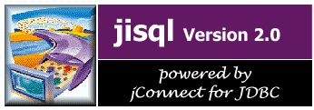

Bienvenido a jisql
jisql le brinda la oportunidad de interactuar con un servidor de bases de datos Sybase; de hecho, desempeña las mismas tareas que isql, pero aporta funciones adicionales y una interfaz de usuario gráfica.
jisql incluye los siguientes temas en línea: